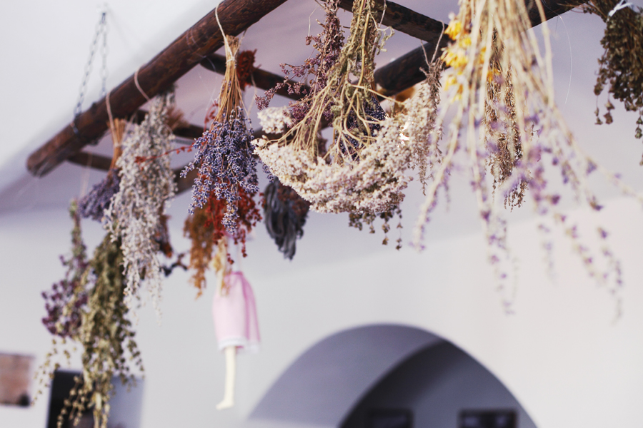

Est. v podhůří Orlických hor
Bilerbin
Přírodní produkty | Rodinná kavárna
O nás
Vše to začalo před deseti lety, kdy jsme se po dostudování VŠ rozhodli, že město není nic pro nás — žít chceme někde v přírodě. Naší inspirací jsou babičky, které ještě žily v souladu s přírodou.
Ač jsme oba chemici, té chemie (a obzvláště v jídle) už nám připadá trochu moc. Snažíme se co nejvíce si vypěstovat, na naší zahradě ale nenajdete žádné přešlechtěné cizokrajné rostliny, umělá hnojiva a chemické postřiky. Uznáváme permakulturní přístup — vzorem nám jsou naše babičky, které ještě žily v souladu s přírodou.
Nejdříve bylo vše jen pro nás, recepty jsem postupně upravovala a vylepšovala. Rodina a kamarádi si brzy zvykli, že dárky od nás jsou většinou jedlé. A protože všem moc chutná, rozhodli jsme se vyrábět dobroty pro co nejvíce lidí, kteří chtějí džemy, sirupy a sladkosti bez umělých konzervantů, barviv a aromat.
A teď už je to jen na vás. Moc si přejeme, aby vám chutnalo a měli jste dobrý pocit, že děláte něco pro své zdraví i naši přírodu.
Produkty
Sirupy
Bilerbin
Zaujalo vás to?
Vyzkoušejte naše bylinkové sirupy a marmelády — objednejte online nebo nás navštivte v kavárně v Lanškrouně.
Kavárna
Rodinná kavárna
v centru Lanškrouna
Mimo výrobu sirupů a marmelád také provozujeme malou kavárnu. Kromě výborné kávy a bylinkových čajů si můžete pochutnat na domácích dezertech a ochutnat všechny naše sirupy jako horké nápoje nebo limonády.